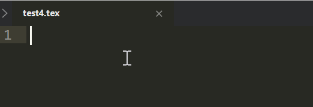
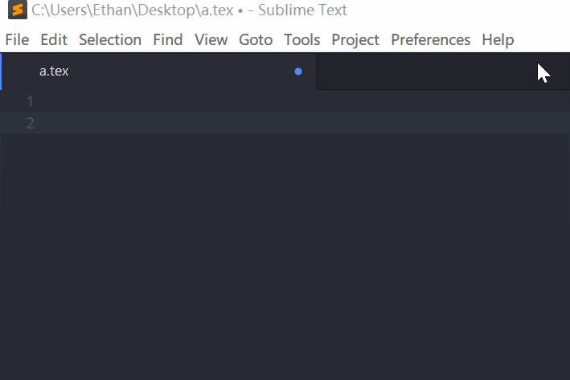
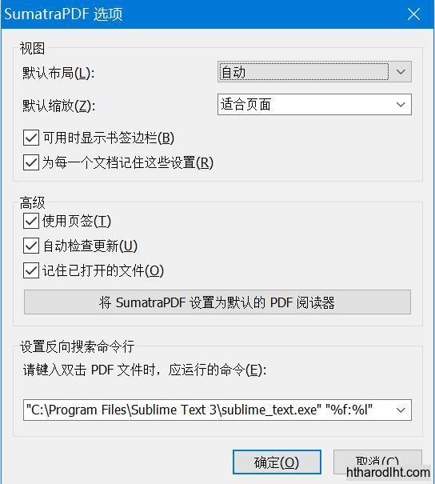
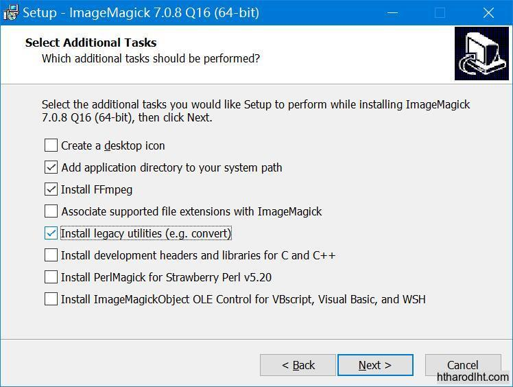
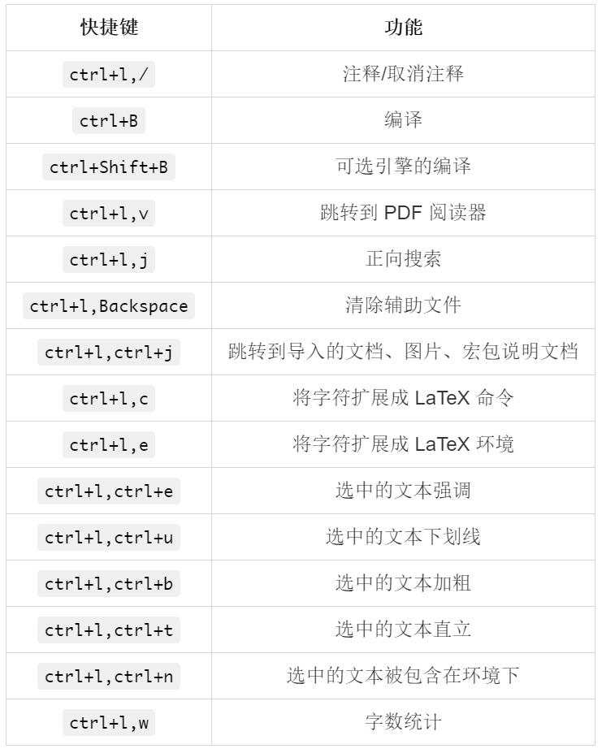
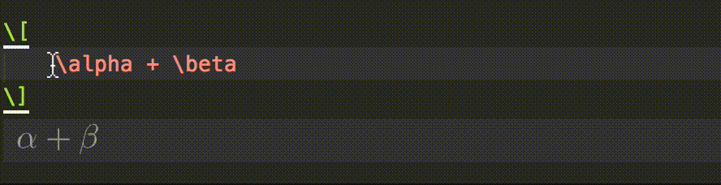

Sublime Text 下的 LaTeX 及高级应用
Sublime Text 是一个很好的文本编辑器，它的各种方便的功能以及优美的代码高亮让人心旷神怡，相较于其他的编辑器还具有打开速度快的特点，使其在文本编辑器中占有一席之地。
那么在 Sublime Text 中如何编辑、编译 LaTeX 呢？又如何将其配置成超越 IDE 的神器呢？本文就是介绍这个的。
选择 Sublime Text 写 LaTeX 的理由
- 优美的代码高亮
- 高效的代码补全
- 便利的自定义补全
- 强大的快捷键
- 近乎完美的辅助周边——如集成 Detexify、清理辅助文件、字数统计、跳转打开宏包说明文档、双向搜索
- 公式、插图的实时预览
 - 列举环境下自动补全（Shift+Enter）\item 等信息。
 - 引用时的自动补全 (交叉引用、参考文献、宏包均支持)
- 环境的自动扩展与快速修改
- 文本编辑的功能（下划线、强调、加粗等等）快速完成
- 便捷的自行搭建多发行版
- 完善的魔术注释生态
下载列表清单
- Sublime Text 3 & 相关插件如下（插件不需要在此处下载）：
- LaTeXTools LaTeX 环境配置以及编译
- LaTeX-cwl LaTeX 命令的自动补全
- LaTeXYZ 提供更加智能的数学环境下的自动补全以及快捷键
- Sumatra PDF PDF 阅读器，以及用于双向搜索
- ImageMagick & GhostScript 用于公式、插图的实时预览
开始搭建
安装 Sublime Text
从 官网下载 后双击执行，基本没什么要注意的。
注：Sublime Text 是收费软件，但是试用版享有所有的功能，只是偶尔弹出购买的对话框，相较于大多数收费软件算十分良心了。
安装 Package Control
依次点击 Tools -> Install Package Control，或者参考 官网 给出的两种方法。
插件安装
Control+Shift+P，输入 pcip(找到 Package Control: Install Package)，回车后，输入 LaTeX，找到待安装的插件—— LaTeXTools、LaTeX-cwl、LaTeXYZ 等等，依次敲回车后进行安装。
注意：
插件安装后需要重启 Sublime Text 方能生效，尤其是安装 Package Control 后。
在安装 LaTeXTools 之前需要安装有 TeX 发行版，如 MikTeX、TeXLive 等。安装好该插件后可以依次点击
Preferences -> Package Settings -> LaTeXTools -> Check System来对环境进行检测。
关于插件的功能，之后会再提到。
安装 Sumatra PDF
从 官网下载 后执行安装。
接下来是配置 Sumatra PDF 用于反向搜索：
由于最新版本的 Sumatra PDF 关闭了直接设置反向搜索选项功能，所以我们需要先编译一个简单的 tex 文档，然后才能够进行配置。
测试样例如下，将其复制粘贴后命名为 test.tex (只要名字不含中文均可)，然后将其编译（在 Sublime Text 中按
Ctrl+B）。1
2
3
4
5\documentclass{article}
\begin{document}
Hello, \LaTeX{}.
\end{document}接下来用 Sumatra PDF 打开生成的 PDF，然后点击左上角，找到设置，然后点击选项，在最下方添加以下字符：
1
"C:\Program Files\Sublime Text 3\sublime_text.exe" "%f:%l"
如图所示。
你也可以用命令行执行以下代码以完成配置（未测试过此方法是否仍然可行）
注：此种方法须将 SumatraPDF 添加到系统环境变量 Path 中。1
sumatrapdf.exe -inverse-search "\"C:\Program Files\Sublime Text 2\sublime_text.exe\"\"%f:%l\""
想来，直接在高级选项中添加如下代码应该也是可以的
1
InverseSearchCmdLine = "C:\Program Files\Sublime Text 3\sublime_text.exe" "%f:%l"
注：不论哪种方法，你都需要将 Sublime text 的安装路径改成你自己的安装路径。
至此，你就可以在 Sumatra PDF 中点击跳转到相应的代码了——不管该代码是否在 Sublime Text 中打开。
安装 ImageMagick & GhostScript
这一步是为了实现行间公式和插图的实时预览。
安装 ImageMagick
这一步需要注意的是，必须勾选上两个：添加系统环境变量、安装实用工具，如图所示：
安装 GhostScript
从 官网 上下载后安装。至此，你就可以享用在 TeX 环境下由 LaTeXTools 插件带来的在线查看行间公式以及插图的功能了。
注：如果在使用过程中，出现了某一个实时预览不消失的情况，请点击
Ctrl+Shift+P后输入lcc找到LaTeXTools: clear cache清除一下缓存。
LaTeXTools 高级应用
设置
依次点击 Preferences -> Package Settings -> LaTeXTools -> Settings-User 可以打开设置文件。
亦可以在 官网上查看。
设置文件里面的注释说得很清楚，基本上可以让懂得英语的人看懂每一项设置是什么。
设置文件分为以下几个部分——
- 通用设置：参考文献、交叉引用等常用功能的监视器与触发器开关
- 预览设置：与数学公式、插图相关的设置
- 辅助文件设置：指明哪些是辅助文件，以确认在使用
Ctrl+L,Backspace时所需清理的辅助文件 - 平台设置：与平台相关的设置，如发行版路径、发行版类型、终端平台、编辑器平台等等
- 输出目录设置：日志之类的文件输出设置
- 构建器设置：一般不涉及，使用默认即可
- 构建面板设置：错误、警告信息相关设置
- 阅读器设置：默认值与平台相关
- 可于代码中打开的文件类型设置：主要用于插图时的提示
- 参考文献设置：如使用 BibTeX 还是 BibLaTeX，参考文献应用时格式的自动生成等
- 缓存选项
这里只提点两个地方
- “texpath” 用以发行版的指定路径，如果自己要用两种发行版的话，这里不能指定，留空即可，系统会自动添加
$Path参数。 - “distro” 用以指定发行版类型，默认为 MiKTeX，TeXLive 用户最好指定一下，以消除 Check System 中不必要的参数。
常用快捷键
所有的快捷键都可以在 Sublime-keymap 中找到，亦可以去 官网 查看。

注意：
- 在使用时，键盘须是英文状态。
- 快捷键大多数是以
ctrl+l开始的。 - Mac 下请将
ctrl换成command。
自动补全
LaTeXTools 插件为常规文本和数学文本提供了相当丰富的自动补全功能，这些自动补全都以 Tab 键作为触发。
你可以在 LaTeXTools 插件的安装目录里面看到 LaTeX.sublime-completions 和 LaTeX math.sublime-completions，这两个文件分别定义了常规文本模式下和数学模式下的自动补全，它们都以 Tab 键作为触发。
- 在数学模式下，主要提供的是希腊字母的自动补全。
- 在常规文本下，提供了常用环境的简写以实现补全功能。
自定义自动补全
我们可以仿照 LaTeX.sublime-completions 的模式，添加自己所需要的自动补全。
如添加以下一行
1 | {"trigger": "befr", "contents": "\\begin{frame}{$1}\n$0\n\\end{frame}"} |
就可以实现在 Sublime Text 中输入 befr 后按 Tab 就自动扩展为后面的内容了。
注意：$ 后数字越大，光标先出现在那儿，按了 Tab 后光标会按数字降序移动。
此外，Shift+Enter 也为我们提供了一个非常好的功能，那就是当光标所处环境为 itemize、enumerate 时，自动添加 \item ，而如果只是敲 Enter 则仅有为文本编辑器自带的换行功能——即换行加缩进，如果环境为 description，则会添加、item[] ，这个无疑为列举环境的快速书写提供了很大的便利。
修改编译选项与多发行版的集成
在 LaTeXTools 包文件中用 Sublime Text 打开 LaTeX.sublime-build。
以下是经我修改过的一段配置文件
1 | { |
name、builder、program 均是默认参数，name 用以指定编译选项中的名称，program 用以指定最终执行的编译引擎，这些引擎均是可以在系统环境变量 Path 下可以找到的编译引擎。
如何进行多发行版的配置呢？
只需要添加一个参数 builder_path, 以下是我修改过的一部分配置文件，这样在我使用 Ctrl+Shift+B 后，就可以出来两个选项 —— TL - XeLaTeX 和 MiK - XeLaTeX。
经检测（编译后查看. log 文件）是可以实现多发行版的指定的。
1 | { |
需要注意的是，json 中路径要么用 /，要么用 \\。
魔术注释
很多编辑器支持魔术注释，Sublime Text 亦不例外，到目前为止，支持多种魔术注释。
- 编译引擎指定，这个是有提示的，支持所有的编译引擎。
1 | % !TEX program = xelatex (pdflatex,lualatex...) |
- 文件编码指定为 UTF-8，支持几乎所有的编码
1 | % !TEX encoding = UTF-8 (utf8) |
- 编译选项指定，如在使用 minted 时需要添加这个。
1 | % !TEX options = --shell-escape |
- 主文件指定，在使用 input、include 导入文档时用这个指定主文件，实现在其他文件界面时编译的文件是主文件。
1 | %!TEX root = <master file name> |
- 拼写检查，设置 Sublime Text 中集成的拼写检查器的语言。
1 | %!TEX spellcheck |
其余的魔术注释请参考可以参考 官方文档。
其他 feature
其他 feature，均可去 官方文档 中查询到，此处不再赘述。
基本都可以在 Ctrl+Shift+P 后输入 LaTeX 后找到。
LaTeXYZ 简介

LaTeXYZ 提供了更多的数学环境下的自动补全，诸如各种箭头符号、带定界符的括号等的快捷输入。官方说明 里面有更多的信息。
LaTeXYZ 和 LaTeXTools 自带的补全有相同的地方 —— 都是用 Tab 进行扩展触发，但是也有不同的地方，LaTeXYZ 提供了不少以 ` 开始的自动补全，如分数 (\frac) 为 `+/。
总之，LaTeXYZ 提供的数学环境自动补全支持还是挺好的。
当然除了当在数学环境下选中某些字符，试图添加 “{}”，结果变成了 “\{ \}“ 外。